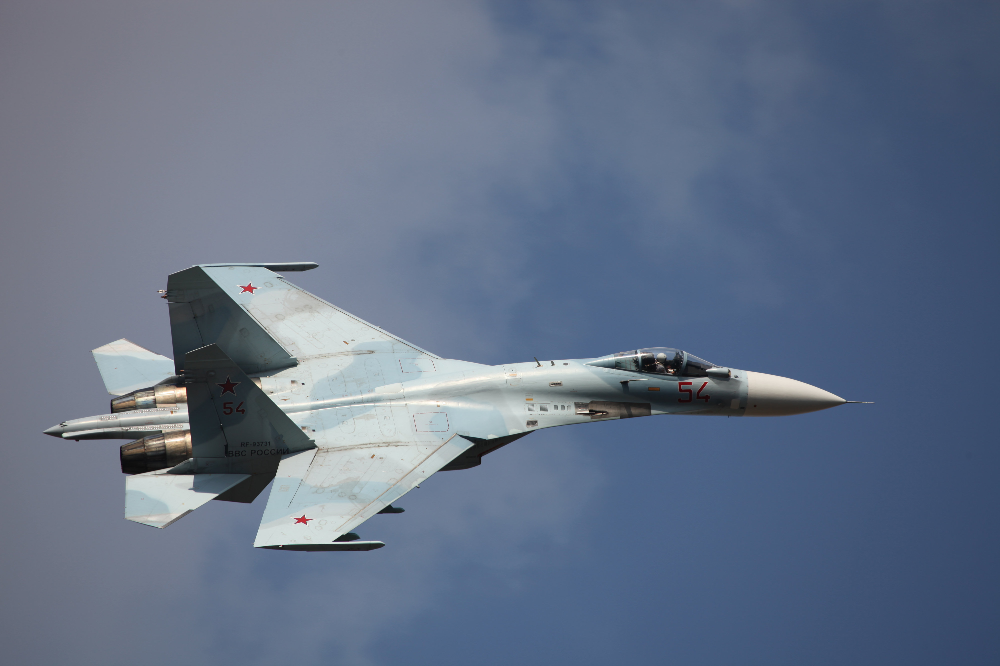

The Sukhoi Su-57 is a Russian 5th Gen all weather Capable multirole fighter aircraft The aircraft boasts stealth technology and its airframe consists of mainly lightwieght composite materials It is powered by two engines which feature thrust vectoring capabilities.
The Lockheed Martin F22 Raptor is a 5th gen multirole air superiority stealth aircraft. It is considered a direct rival to the Russain SU-57. The United States has not made this aircraft available for export as it uses secret stealth technology to avoid ground based radar systems. The aircraft also features thrust vectoring.
The Chengdu J-20 , also known as Mighty Dragon is a twinjet all-weather stealth fighter aircraft developed by China's Chengdu Aerospace Corporation for the People's Liberation Army Air Force (PLAAF).The J-20 is designed as an air superiority fighter with precision strike capability.
The General Dynamics F-16 Fighting Falcon is a single-engine multirole fighter aircraft originally developed by General Dynamics for the United States Air Force (USAF). Designed as an air superiority day fighter, it evolved into a successful all-weather multirole aircraft. The aircraft features a high thrust-to-weight ratio and is one of the most popular fighter airacrafts worldwide
The Sukhoi Su-27 Flanker is a Soviet-origin twin-engine supermaneuverable fighter aircraft designed by Sukhoi. The Su-27 was developed into a family of aircraft; these include the Su-30, a two-seat, dual-role fighter for all-weather, air-to-air and air-to-surface deep interdiction missions, and the Su-33, a naval fleet defense interceptor for use from aircraft carriers.
